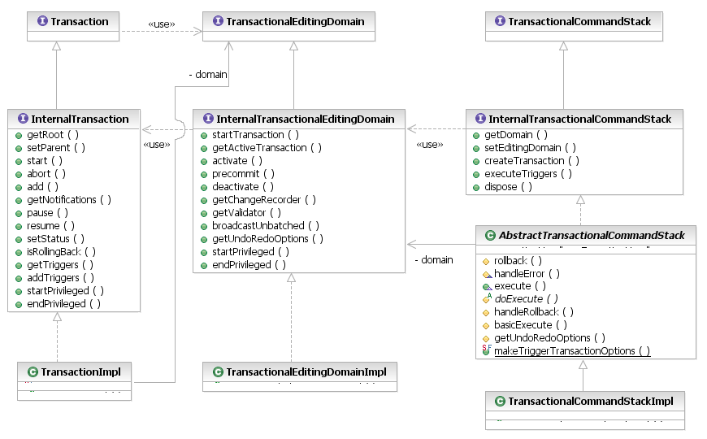
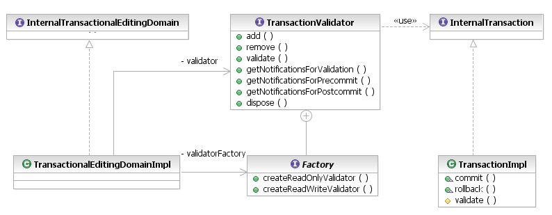

Clients that have special requirements in the management of transactions can extend virtually all aspects of the transactional editing domain API. As is usual in EMF, the transaction API defines a number of InteralXyz interfaces corresponding to the interfaces that are intended for public consumption. A valid editing domain implementation must implement the InternalTransactionalEditingDomain interface, a transaction the InternalTransaction interface, and a command stack the InternalTransactionalCommandStack interface. Of course, it is highly recommend to extend the default implementations of all of these interfaces.

[as SVG]
The InternalTransactionalEditingDomain interface specifies the transaction lifecycle API, from activating a transaction through to deactivating it, with the intermediate stage of processing pre-commit listeners and executing their trigger commands on the InternalTransactionalCommandStack. The editing domain also keeps track of which of possibly numerous transactions in a nested structure on one or more threads is currently active, and implements the transfer of ownership from one thread to another in the privileged runnable mechanism.
The TransactionalEditingDomainImpl class has an associated Factory for the construction of TransactionValidators. For each root-level transaction that the editing domain activates, it uses its factory to create a validator that will validate the transaction when it commits, as well as tracking the notifications that will be sent to pre- and post-commit listeners. There are two kinds of validator: read-only and read/write, according to the nature of the transaction.

[as SVG]
Extensions of the editing domain may install their own validator factories to customize their validators to set different options using the EMF Validation Framework's live validation API. For example, a client may want set specific constraint filters or provide arbitrary client-specific data to validation listeners. See the EMF Validation Framework documentation for details.